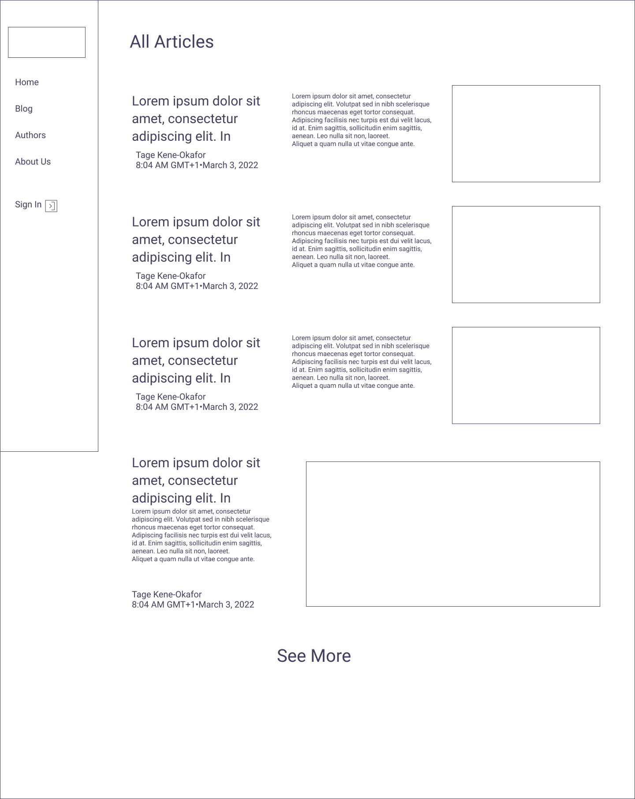
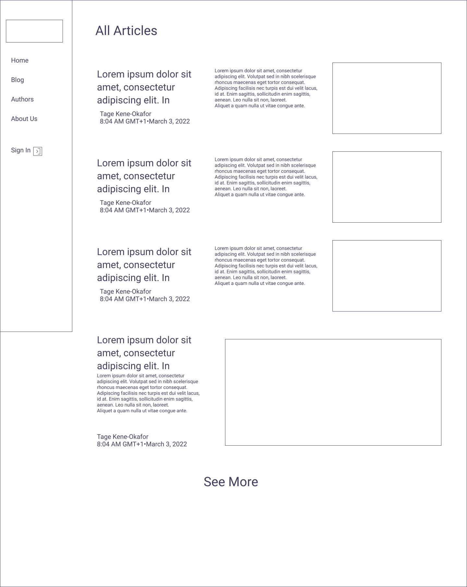

What is the essential story being told by your site and what type of structure did you choose to implement.
FNH (Food Nutrition and Health) is a website that provides information about food and nutrition. It houses information accured from different authors with knowledge of food and nutrition. Anyone visiting the website can sign up and sign in, there details are stored in the browser database using localforage library. The localforage library was choosen because it automatically support different browsers and devices by internally using either indexedDB, websql or localstorage to store the data. This made the website much more dynamic. Signed in user can drop a review about the site at the homepage (which will appear automatically on the homepage review carousel), they can choose to become an author and create a new article at the blog page. The blog page entails a list of all the articles created by all the authors on the platform.
 
